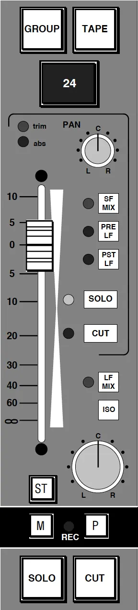
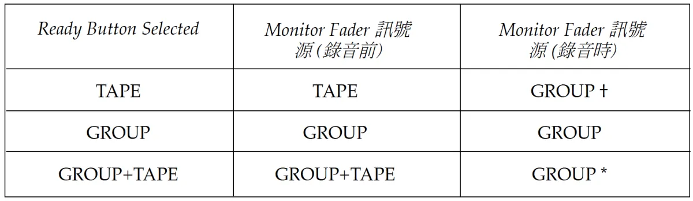
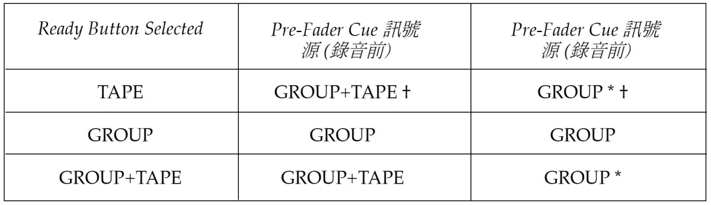
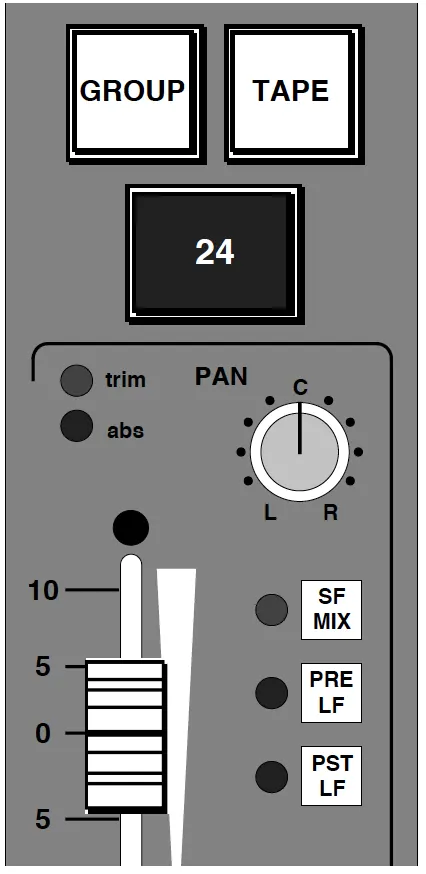
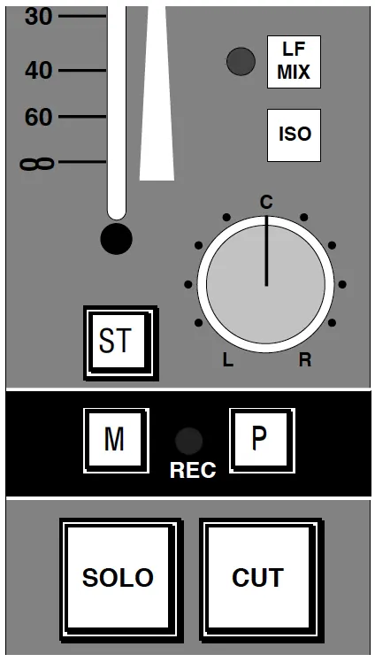

接續上一篇，今天要介紹的也是Channel Strip，內容著重於大小Fader、Subgroup、Aux send等等的訊號路徑和不同控台模式底下的預設設定。聲音工程對於訊號路徑的清楚掌握有多重要，相信就不用小編再多說了，趕快來看看今天的說明書導讀吧！
Monitor Input and Small Fader Section
Monitor Input Section
監聽訊號來源的選擇透過Monitor Input Section上的GROUP、TAPE 按鈕，PRE LF (Large Fader)、P(O)ST 按鈕決定的。
注意PRE LF和P(O)ST按鈕的優先順序優於TAPE和GROUP，不過我們暫時當作他們都沒有被按下去。


1. 選擇哪一個訊號進入Monitor fader，GROUP訊號指的是送出給multitrack的訊號，而TAPE指的是從multitrack回來的訊號。
2. 使紅色的RECORD按鈕來作為Track Ready按鈕。
每個RECORD 按鈕都和軌道相對應多軌盤帶機Track Ready控制相連，機器也設定只有在 GROUP 或TAPE 被選擇的時候才能夠開始錄音。這個設定是為了避免不小心錄到音而設計的。RECORD按鈕中間刻上了該軌道的編號，這是為了要清楚的標示出哪一軌目前正在準備錄音，如果I/O模組的RECORD是開啟的，那該編號的多軌盤帶機在中央狀態切換鈕的RECORD被按下時就會自動轉成錄音模式。
有些控台允許I/O模組在Record active的情況下於播放中途直接開始錄音(編按：類似現在的quick punch)，有些則必須重新給予指令才能開始錄音。建議錄音前一定要先確認一下這部分的操作邏輯！
在J系列電腦上，只要相容於Sony 9-pin serial track ready 控制器的機器，都可以直接被軌道上的RECORD鍵控制。電腦也可以點亮RECORD按鈕的燈， 來顯示機器上相對應的狀態。
RECORD按鈕也可以啟動讓軌道錄製到 SSL的DiskTrack硬碟多軌錄音機的錄音機制(如果有安裝的話)。有關如何設定機器和電腦，將會在後面的章節詳細介紹。
Small Fader
根據設定65mm ‘Small Fader’ 可以被擺在通道或監聽路徑並可以設定是否有自動化控制(automation)。若設定有的話，則他將被轉為VCA控制，並有自己的自動化狀態切換鈕(ST)和LED指示燈號。
Small Fader 也可以用來自動化控制Large和Small Fader之間的Pan。這個模式可以從電腦內的Desk Setup選單內選擇「4-Channel Pan」。任何軌道都可以被切換到這個模式。在4-Channel Pan模式下，Large Fader 控制兩條路徑(Small&Large Faders)的整體訊號大小，Small Fader控制相對訊號比例。
4-Channel Pan模式可以用來做：
1. Mono或Stereo的Surround Mixes：將Small Fader路由到其中一組Stereo Subgroup buss。The Small Fader 就可以控制從主喇叭(Front output)到環繞喇叭(Surround output)的方向定位，而Small Fader pan則是控制聲音在環繞喇叭間(stereo surround outputs)的定位。
2. 自動化控制main Mix中聲音的左右定位：將兩個Faders(Large & Small)都路由至主輸出，其中一個Pan到左邊，另一個Pan到右邊，這時候Small Fader 將可以控制聲音的左右定位。
注意：在4-Channel Pan模式時，Small Fader的CUT按鍵是沒有作用的(inactived)。所有的CUT或SOLO皆由Large Fader控制。
Small Fader Pan Control
Small Fader pan control永遠都是啟動的。當Small Fader 路由至Multitrack 或Stereo Subgroup busses 時他會控制聲音在奇數和偶數busses之間。若Small Fader 是路由至主輸出，他會控制聲音在左右喇叭之間的定位。而若器材設定允許LCR Pan，則根據中央區域2 CH/4 CH的設定決定是LR或LCR panning。
注意在LCR模式的時候，Small Fader 依然是控制聲音在Multitrack/Stereo subgroups 上奇數/左和偶數/右之間的定位。
Small Fader Cut and Solo
不論我們將Small Fader 設定在通道或監聽路徑，SOLO和CUT按鍵都是和Small Fader相關連的。通常SOLO按鈕會啟用‘in place’ (destructive) Solo 功能。這在使用Small Faders 當作Monitor faders 時(RECORD + SMALL FADER TO MON狀態)很方便。
若在RECORD狀態的預設設定(Small Faders 作為Channel faders)，SOLO按鈕也可以透過選擇SL952(中央區域)上的AFL (STATUS LOCK)來切換到AFL(After Fade Listen)。AFL 訊號將會被L/R和LCR pan的設定影響，也就是AFL-inplace (例：Solo人聲時，除了人聲和他的EQ/Dynamics/EFX 外，其他聲音都會被mute掉)。
同樣的，SOLO按鈕也可以透過選擇SL952(中央區域)上的PFL (STATUS LOCK)來切換到PFL(Pre-Fade Listen)狀態。
若是SL952上選擇SOLO IN FRONT，我們將可以同時聽到AFL訊號和main Mix 訊號，這時會有一個旋鈕方便我們調整AFL和MIX的比例。
CUT按鈕會Cut(mute)掉Small Fader。依照控台的設定狀態和模組內DIL switch和link settings，決定他是否也會Mute掉Pre-Fader Cue/Aux sends。這部分在後面會有更詳細說明。
Small Fader Source and Destination
控台STATUS 狀態切換決定Small Fader 是放在監聽或通道訊號。 (第二章節有詳細介紹)若按下SF MIX按鈕，Small Fader 訊號將會路由至主輸出。除了文字敘述外，我們也整理了Small Fader 在預設幾種狀態之下的訊號路徑表。當然，這些設定可以隨著每個使用者的習慣而調整。

Group/Tape Selections and the Supercue System
GROUP和TAPE按鈕都是被用來選擇Monitor Faders 的訊號源和決定Pre-Fader Cue 的訊號。先前也有提過，這兩顆按鈕也是啟動模組上RECORD機制的啟動鈕。下表列出了不同按鍵組合和其產生的訊號路徑結果。

如同我們上面所看到的，Group Output 和Tape Return 可以同時被監聽。出來的訊號平衡會是1:1的比例。我們也可以注意到，若只選擇TAPE按鈕，Cue sends 依然還是收到Group 和Tape 兩個訊號，這讓工程師可以知道什麼時候要punch in，也讓樂手可以聽到音樂和正在錄製的人聲。
上表適用於multitrack沒有進行錄音的時候。當機器切換至錄音狀態，控台可以接收來自錄音機machine record line的訊息，並以下表所列的設定調整監聽訊號來源(見下表)。這個自動化的功能叫做SSL Supercue System。讓我們先來看看Monitor fader 訊源在錄音前和過程中的設定。
 


* 打星號代表Supercue System從GROUP+TAPE切換到只有GROUP訊號而已。
† 表示若模組上的EQ/Dynamics卡有將LK2開啟，則這個狀態下會監聽到TAPE訊號。註：(LK2代表若TAPE被按下則強制監聽Tape訊號)，這在後面會有更詳細的解釋。
In the Control Room
當我們在鋪設新軌道時，可以監聽Group或Tape訊號。GROUP使我們可以監測進入Multitrack的訊號。記住，當我們選擇TAPE only，只有在multitrack回放、或著停下來之後自動切換到Input才能聽到訊號。
當機器是Record模式時，監聽訊號會自動切換到GROUP，表頭依然會顯示TAPE，這樣子的切換方式可以讓我們在錄音前找到一個“clean edit”(編按：應是指方便剪接的地方)的點開始錄音。例：在開始錄音前播放Multitrack回放，開始錄音時切換成Group Output)
當我們在做over dubbing的時候，同時按下TAPE和GROUP可以讓我們聽到藝人跟著錄音前的TAPE音樂一起演奏，而開始錄製時只聽到被錄製的Group signal。
感覺東西越來越複雜了，有沒有突然希望大家一起錄到兩軌錄音機就好了呢？
In the Headphones
我們先假設TAPE和GROUP都被按下去了。這代表麥克風的聲音一直存在耳機裡，同時也聽得到之前已經錄好的部分。這讓樂手在錄音鍵按下去之前可以聽著前面的take (TAPE)，方便延續原本的情緒。錄音開始時，樂手也可以聽到自己正在演奏的聲音(GROUP)。開始錄製時，該軌道的TAPE就停止回放。
Monitor Cut and Solo
當我們在鋪軌道的時候，通常我們會希望控制室監聽可以不影響到樂手監聽並自由的CUT和SOLO。在上方模組卡有一個連結選項(LK3)可以決定Pre-Fader Cue sends會不會同時被控制室監聽的CUT影響。
如果有選擇這個選項的話，在RECORD或REPLAY狀態時，Large fader 的CUT不會cut掉Pre-Fader Aux sends。如果有選擇這個選項的話，在其他狀態時Pre-Small Fader Aux sends 也不會被Small Fader CUT的按鍵Cut掉。

Small Faders as Extra Auxiliary Sends

位於Small Fader 隔壁的PRE LF 和 P(O)ST LF 按鍵, 提供了另一個選項：可以將通道訊號(Channel Signal)送進監聽路徑(Monitor Path)，取代GROUP和TAPE的選擇。這在MIX狀態時用來設定自動化的auxiliary sends等都很方便(第二章節有詳細介紹)，然後也可以經由Routing Matrix將訊號送到Outboard 效果器等等。例：Group25-48可以用來送出一場live錄音的分軌訊號。

注意：若在電腦中選擇4-Channel Pan 模式，則POST LF 會自動被開啟(雖然燈號不會自動亮)。
Large Fader
Large fader 的訊號通常都來自於Channel Input Section。不過當然也有其他路徑可以選擇：


Large Fader Pan Control

Large Fader pan control是一直都在線路裡的(沒辦法bypass)。當Large Fader 路由至Multitrack或Stereo Subgroup busses，Pan control將控制Large Fader 訊號在奇數/左、偶數/右 之間的聲音定位。
當路由至主輸出時，它控制在左右或LCR的定位(有開啟4-CH的話就是LCR)。LCR模式底下，訊號還是會在Multitrack或Stereo Subgroup busses 的奇數/左、偶數/右之間的聲音定位。
關於ST(atus), M(atch)和P(lay)按鍵，將在未來說明電腦操作的部分一起解釋。
不論我們怎麼設定，大顆會亮的SOLO和CUT按鍵都是和Large Fader 相關連的。
SOLO – 通常SOLO按鈕會啟用‘in place’ (destructive) Solo 功能。這在使用Large Faders 當作Monitor faders 時(RECORD狀態)很方便。若在RECORD + SMALL FADER TO MON狀態的預設設定(Small Faders作為Monitor faders)，SOLO按鈕也可以透過選擇SL952(中央區域)上的AFL (或 STATUS LOCK)來切換到AFL(After Fade Listen)。
AFL 訊號會跟著L/R和LCR的定位，提供AFL-in-place的設定。SOLO按鈕也可以透過選擇SL952(中央區域)上的PFL (Status Lock)來切換到PFL (Pre-Fade Listen)狀態。若是在SL952上選擇SOLO IN FRONT，我們將可以同時聽到AFL訊號和main Mix 訊號，這時會有一個旋鈕方便我們調整AFL和MIX的比例。
Solo Isolate
如果選擇模組的ISO切換，則Large fader 訊號路徑不會因為其他軌道被Solo而切斷。ISO切換也可以作用在Small Fader上，只要同時按住SOLO和ISO就可以簡單完成。若要解除，只要同時按住大Large Fader 上的SOLO 和ISO即可。(也可以直接整台機器重新開機)。
CUT – 當Large Fader 位在通道訊號路徑(Channel signal path)時，CUT按鍵會切斷兩個地方的訊號 – input和fader之後。這也表示Pre-fade aux sends會被CUT按鍵或Destructive Solo切斷。
STATUS – 在Large Fader 旁邊的切換鈕和trim、abs和alt LED燈號關係到自動化控制系統。這部分在後面介紹電腦的章節會再提到。

Large Fader Subgrouping
Large Fader 可以被指派到控台中間的八個Group Faders。
Fader 旁邊的LED燈顯示該軌道被分配到第幾個Group。Group Faders 也可以指派到其他Group faders，這讓允許我們做出更多不同的Subgrouping組合。
要指派Large Fader 到hardware group的話，先在SL955 Motion Control panel上選擇HARD GROUP SETUP。接著快速的按下Fader底部的切換按鈕，這時七段顯示器的數字就會往上加，若是長按按鈕，則數字會往下遞減。
如果在顯示器上顯示0的話，Group Fader Solo時訊號就會被切掉。如果顯示器是空白的那就不會被Group Solo影響。
Large Faders 和Group Faders都和電腦連接，可以設定自動化控制來幫助混音。
Channel Outputs
 Routing Matrix
Routing Matrix
控台的Group Output跟他的I/O模組一樣多，而 Routing Matrix讓我們方便的路由前面48個Group Output的訊號。依據不同狀態設定(STATUS)和Routing Matrix上面的訊號源選擇鈕，它可以接收任何一個Fader出來的訊號。
這主要有四個用途：
1. 在RECORD或REPLAY狀態時，通道信號(Channel signal)可以被送到任何一個multitrack group來鋪設軌道，如果沒有選擇SMALL FADER TO MON(ITOR)的話，就是從SmallFader，反之則是從Large Fader。來源Fader的PAN control控制聲音在奇數/左和偶數/右之間的定位。
2. 在MIX狀態下，視需求設定，Large和Small Fader(一般是Small Fader)都可以送到Routing Matrix做前48組聲音次群組的匯流。這部分的路由設定好後，我們可以按下Large Fader旁的SUB GP來接收相對應編號的次群組匯流。Small Fader也可以透過按下GROUP按鈕從Group Monitor input接收
次群組匯流的訊號。
3. 在MIX狀態下，Small Fader可以從Multitrack bus被用來當作可以自動化的訊號Send。使用Small Fader旁的PRE LF和P(O)ST LF按鈕的話，pre-或post-Large Fader的通道訊皆可以被路由至Multitrack bus然後再從Row G Patch到其他的外部效果器。
4. 任何auxiliary send經由EFX系統都可以用來作為額外的send。見前幾段落的Auxiliary Sends會有更詳細的介紹。

注意：這些按鈕在RECORD和REPLAY狀態下也都是被啟動的。
Routing Bank Select Switches
這兩顆按鈕決定訊號是被送到1-24或/和25-48的Group output。若兩個都沒按下去，則訊號不會送出去。
The Routing Source Select Switches
Multitrack Routing Matrix的訊號來源是由下面四個訊源選擇鍵決定。分別為LF、SF、EFX ODD和EFX EV(EN)。LF和SF會互相取消，透過電路鎖定狀態。按鍵是訊號在LF和SF之間切換。
選擇EFX ODD將會把所有路由到EFX ODD的訊號送到所有奇數和偶數Busses。選擇EFX EV將把所有路由到EFX EV的訊號送到所有奇數和偶數Busses。兩個都按下的話，將會把EFX ODD送到奇數busses， 而EFX EV 送到偶數Busses。EFX的選擇將會覆蓋過LF和SF切換。
下表顯示在預設情況下幾個Routing Matrix與控台狀態設定的關係。當然，這些在工作時也可以很自由的更改訊號的路徑。

Stereo Subgroup Bus Routing
ABCD四個按鍵將模組路由至任何一個或所有四個Stereo Subgroup busses。而送出去的訊號來源是透過ABCD底下的四個按鍵LF、SF、EFX ODD和EFX EV(EN)來選擇。按下LF或SF會將post-pan的Large或Small Fader訊號送到Stereo Subgroup bus。選擇EFX ODD會把所有送到EFX ODD的訊號送到左和右的Busses : 選擇EFX ODD會把所有送到EFX ODD的訊號送到左和右的Busses。若兩顆按鍵都按下，則EFX ODD訊號將會被送到左邊而EFX EV將會被送到右邊。EFX的選擇會覆蓋過LF和SF
Group Output Section
位於Routing Matrix的下方，模組的這個部分是由一個有Gain control 的bus mixing amplifier和他的訊號選擇按鍵所組成。
The Group Output可以選擇從四個地方獲得訊號：
1. 相對應的Multitrack bus (不按任何按鍵)。
2. FADER – 這顆按鍵代表著直接把該軌的post-channel fader 訊號送到Multitrack Group Output。Bypass掉 Routing Matrix、track mix bus、bus mix amp和Bus Trim control。選擇這個方式的Routing可以改善噪聲指數(noise figures)但同時也停用了其他路由至此的軌道。不過Bus mix amp 依然會繼續送訊號到通道輸入(Channel Input)的SUB GP 按鈕。FADER 按鍵旁的綠色或黃色的LED將發光標示出哪一個fader是source ; 黃色表示Small Fader，綠色表示Large Fader。
3&4. EFX ODD和EFX EV(EN) 負責將EFX bus訊號送到相對應的Group Output，使該Output接收aux send的訊號。
Bus Mix Amp and Trim Control
Bus mix amp的訊號來自於相關連的Multitrack mix bus (例：所有路由至Multitrack Bus 7的訊號會被模組7的bus mix amp控制). Group Output在Patchbay上位於第G排，並在這裡Normalled到Multitrack Send和Group Monitor Input(例：可以接到多軌錄音機的輸入)再透過Small Fader上方的GROUP按鍵送到Monitor Input 。
BUS trim控制鈕衰減所有進到該Bus的訊號，通常都會被放在全開的位置。他們最主要的功能是用來衰減訊號太大的Group Output。例：有很多軌道的訊號同時被指派到同一個Bus ( 相對的音量都已經在fader上調整好)，這時若整體訊號量太大，則BUS trim控制旋鈕就可以拿來把訊號調整到合適的大小並送到multitrack。
當Bus沒有被拿來當作multitrack send的話，我們可以按下模組上的SUB GP，這樣它也被拿來做為相對應的Channel input。這時，我們就能用它作為一個audio subgroup，而BUS trim做為channel input gain的控制。
本說明書版權歸Solid State Logic, Oxford, England所有，中文化僅供技術交流與強力錄音室內部使用，禁止用於商業用途。
PDF版：點我下載
上篇：SSL說明書導讀-Section III: The SL911 Input/Output Module(上)
下篇：SSL 說明書導讀-Section IV （敬請期待）